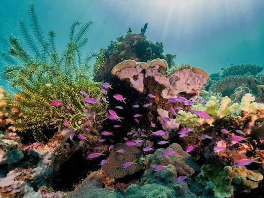

Most people know Laguindingan for one thing: the airport. Flights into Northern Mindanao land there, and passengers head straight out on the road to Cagayan de Oro without a second look at the town. Divers have started to look again, though, because of a fish smaller than a paper clip.
Reports of the Lembeh Sea Dragon in Laguindingan's waters have put this quiet Misamis Oriental town on the radar of macro divers and underwater photographers. This guide explains what the animal is, what a dive here is likely to involve, how to get to the coast, where to sleep, and the questions to put to an operator before you pay for anything.
Keep your expectations in proportion. Laguindingan is a young dive destination, not a resort strip with a dozen shops competing for your booking. Operators, rental gear, boat schedules and site fees are still settling, so plan with more back-and-forth messages than you would need for Moalboal or Anilao.

Laguindingan diving at a glance
- Where: a coastal town on the northern shore of Misamis Oriental, Northern Mindanao
- Draw: macro diving, with reported sightings of the Lembeh Sea Dragon
- Gateway: Laguindingan Airport, which also serves Cagayan de Oro
- Base: Laguindingan itself, or Cagayan de Oro about an hour away by road
- Best for: certified divers with patience and a camera
- Plan for: at least two days, with no flight home within 18 hours of your last dive
What Is the Lembeh Sea Dragon?
The Lembeh Sea Dragon, Kyonemichthys rumengani, is a pygmy pipehorse. It belongs to the same family as seahorses and pipefish and takes its common name from the Lembeh Strait in Indonesia, one of the world's best-known muck-diving areas. An adult is only a few centimetres long, thin as a strand of algae, and pale enough to vanish against the fine growth it clings to.
That is the whole appeal. Nobody spots one by swimming past. You hover over a patch of bottom with a guide who knows the habitat, wait for your eyes to adjust, and maybe, after twenty minutes, see a tiny curled tail move. Photographers prize it for that reason, and the reports from Laguindingan have drawn interest well beyond the province.
Sightings are never promised. Small animals shift position, hide when currents change, and can go unseen for days. A good guide will point one out, give you a short turn at a respectful distance, and move the group along. Any guide who pokes, prods or rearranges an animal for a better angle is one to avoid.
What a Dive Here Looks Like
Laguindingan is about slow, close-up diving. Expect a dive spent within a few square metres, scanning sand, rubble and growth for small life: shrimps, crabs, nudibranchs, pipefish and the occasional seahorse. Which of these turn up depends on the site, the season and the visibility on the day.
Good buoyancy matters more than anything else. Kneeling or finning close to the bottom kicks up silt, ruins visibility for everyone and can crush the very animals you came to see. If your trim is rusty, do a refresher before the trip rather than practising over a fragile site. For the camera, a macro lens or a compact with a close-focus mode and a steady light source will serve you better than a wide-angle setup.
Beginners are not shut out, but this is not the easiest place to learn. Anyone without certification should ask whether a qualified operator runs supervised introductory dives here, and whether the conditions that week suit one.
Getting to Laguindingan
- By airLaguindingan Airport has flights from Manila and Cebu, and from Davao on some schedules. Routes and frequencies change, so compare airlines close to your travel dates. The airport sits in the town itself, which makes this one of the few dive trips where you can be near the water within minutes of landing.
- From Cagayan de OroBuses and vans head west along the coastal highway toward Laguindingan. The ride takes roughly an hour, longer if you leave from the eastern side of the city or hit rush-hour traffic.
- Hired car or operator pickupWith dive gear and a camera case, a private transfer is the least stressful option. Many operators can arrange one, so ask when you book and confirm the exact meeting point.
- Overland from elsewhere in MindanaoFrom Davao, the road trip is long. It suits travellers already touring the island; check bus times and road conditions before you set off.
Where to Stay
The right base depends on where your operator launches from. Staying in Laguindingan keeps the morning short and lets you rest between dives without a commute. Rooms near the airport are handy for early flights, but the airport area is not necessarily close to the dive site, so check the distance before you book.
Cagayan de Oro has far more hotels, restaurants and transport, and it pairs well with a few extra days of city time. Our Cagayan de Oro food guide helps fill the evenings, and the city works as a base if you plan to rest a day before or after diving.
A Simple Two-Day Plan
- Day 1Land, check in, brief
Fly in during the morning and settle into your room. In the afternoon, meet the operator to go over the dive plan, fit rental gear and sort out paperwork. Keep the rest of the day easy, eat early and sleep well.
- Day 2The dives
Start early, when the water is often calmer. Do a first dive, take a proper surface interval, then a second if the plan and conditions allow it. Rinse your gear, back up your photos and stay on the ground overnight.
That second night matters. A common rule of thumb in recreational diving is to wait at least 12 hours before flying after a single no-decompression dive and at least 18 hours after repeat dives or several days of diving. Follow your dive computer and your operator if they ask for longer, and book your flight home for the day after your last dive.
Questions to Ask Before You Book
Ask the operator
- Who is guiding?Ask about guide and instructor qualifications, maximum group size and how well the guide knows the local macro life.
- What if something goes wrong?Check for oxygen and first aid on site, an emergency plan and a way to call for help from the boat or shore. If the answers are vague, look elsewhere.
- Is the sea dragon being seen lately?Recent sightings are a better guide than old social media posts. Also ask about usual visibility and what else turns up at that time of year.
- What gear and fees are included?Confirm rental equipment, site or environmental fees, boat costs and the certification level required.
- What happens in bad weather?Heavy rain and rough seas cancel dives. Ask about rebooking and refunds before you pay a deposit.
When to Go
There is no single best month you can circle on a calendar. Drier stretches tend to bring easier travel and a better chance of calm water, but rain runoff and currents can cloud the sea at any time of year. During wetter months, operators may postpone dives at short notice. Build a spare day into your plans, and let the operator's read on conditions decide the dive dates rather than your flight booking. Our guide to Philippine dive sites by season helps if you want to pair Laguindingan with another region.
What to Pack
- Certification card and logbookA digital copy works, and recent dives in your log help the operator place you.
- Your own mask and computerA mask that fits and a computer you know make a slow macro dive far more relaxed.
- Macro camera setupA close-focus lens and a light, plus spare batteries and memory cards.
- Rash guard and reef-safe sunscreenCovering up cuts down on the cream you need to put in the water.
- Dry bag and dry clothesFor your phone, wallet and the ride back.
- Water and personal medicinesStay hydrated between dives, and check airline rules if you fly with heavy gear.
Diving Gently on a Fragile Site
A new site is at its most vulnerable when word first gets out. A handful of careless divers can flatten the patch of habitat a tiny animal depends on, and once it is gone, so is the reason to visit. Keep off the bottom, touch nothing, take nothing, and resist chasing anything for a shot. Limit your time with a subject so the next diver gets a turn, and choose operators who brief on these rules instead of ignoring them.
Make More of the Trip
Laguindingan sits within easy reach of the rest of Misamis Oriental and its neighbours. West along the coast, Initao is being developed for diving too, and the Initao-Libertad Protected Landscape and Seascape has forest and shoreline worth a look. Cagayan de Oro has river rafting, food and city sights, while Iligan, a longer drive west, is known for Maria Cristina, Tinago and Mimbalot falls. Gingoog, on the far eastern side of the province, fits better into a longer Northern Mindanao loop.
Laguindingan rewards divers who treat the trip as an exploration rather than a sure thing. Message operators early, give the weather room to change your plans, and count any sea dragon sighting as a bonus on top of a slow, careful dive.
Photo credit: Dive Laguindingan.

Comments
No comments yet. Been here recently? Share a tip or ask a question.
Leave a Reply